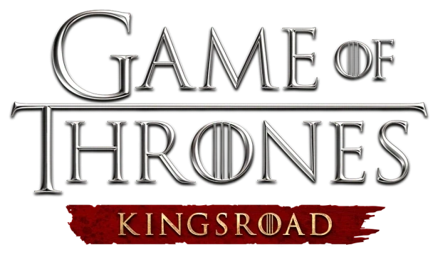

ชุมชน · คู่มือ · ฐานข้อมูลเกม ฉบับภาษาไทย
ศูนย์รวมข่าวสาร สารจากผู้พัฒนา Roadmap ฐานข้อมูล และคู่มือภาษาไทย — ครบทุกอย่างของ Kingsroad ในที่เดียว
คอนเทนต์และกิจกรรมที่กำลังจัดตอนนี้
ค้นหาอุปกรณ์ เซ็ต Amulet บอส มอนสเตอร์ แผนที่ และดันเจียน จากคลังข้อมูลที่ตรวจสอบแล้ว
เลือกเส้นทางของคุณบนถนนสายกษัตริย์
อัศวินเกราะหนักผู้อึดที่สุดในเกม ยืนแนวหน้ารับดาเมจแทนทีม พร้อมท่า Riposte Stance สวนกลับศัตรู เล่นง่ายครอบคลุมคอนเทนต์กว่า 90% ของเกม
ดูข้อมูลอาชีพ →เจ้าของพลังโจมตีสูงที่สุดในเกม ใช้มีดคู่ระเบิดดาเมจใส่บอสในพริบตา ฟาร์มไว แลกกับตัวบางที่ต้องหลบให้แม่นยำ
ดูข้อมูลอาชีพ →นักรบอาวุธใหญ่ดาเมจต่อเป้าเดี่ยวมหาศาล คอมโบไม่ถูกขัดจังหวะด้วย Hit-Stun Immunity ช้าแต่ฟาดทีเดียวสะเทือนสนามรบ
ดูข้อมูลอาชีพ →ทางลัดสู่ทุกส่วนของชุมชนและคลังข้อมูล
จากแดนเหนือสู่ดินแดนใหม่
จุดเริ่มต้นของเซิร์ฟเวอร์ปัจจุบัน 3 อาชีพ เนื้อเรื่องหลัก และระบบพื้นฐานทั้งหมด
ซีซันล่าสุดที่กำลังจัด สงครามตระกูลแดนเหนือ ระบบ House Allegiance และ Burning Battle Spirit
บทที่ 4 Casterly Rock, Harrenhal PvE และการรีเวิร์กกราฟิก (ยังไม่เข้าเกม)
เว็บไซต์แฟนคอมมูนิตี้ภาษาไทย รวบรวมข่าวสาร สารจากผู้พัฒนา Roadmap ฐานข้อมูล และคู่มือ เพื่อให้ผู้เล่นชาวไทยเข้าถึงข้อมูลได้ง่ายและรวดเร็ว
เริ่มต้นใช้งาน